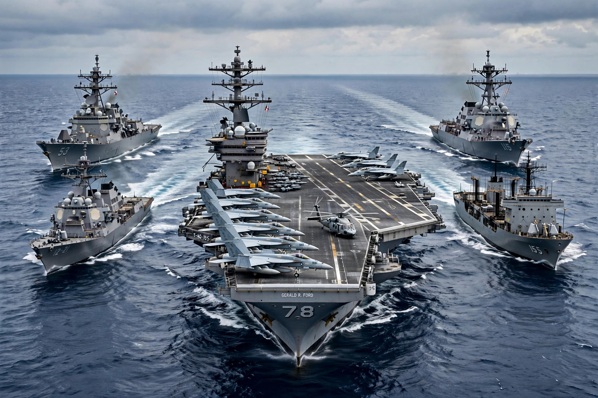

From Wikipedia, the free encyclopedia

Unipolarity is a distribution of power in international relations in which one state exercises most of the cultural, economic, and military influence globally. In a unipolar system the single great power — the pole or hegemon — faces no credible rival, and the classic mechanisms of balance-of-power politics are suspended because balancing against an overwhelming leader is futile or prohibitively costly.
The term entered wide use after the Cold War, when the collapse of the Soviet Union in 1991 left the United States as the sole superpower, commanding the largest economy, unrivalled military reach, and a network of alliances across Europe and Asia. Commentator Charles Krauthammer dubbed the era "the unipolar moment" in 1990–91. Scholars debated whether unipolarity would prove durable: Kenneth Waltz and Christopher Layne predicted that other states would eventually balance American power, while William Wohlforth argued that unipolarity was stable and peace-inducing because the leader's margin was too great to contest.
The rise of China, Russia's military resurgence, and relative shifts in global output have led many analysts to describe an emerging multipolarity, though others stress that US advantages in finance, technology, alliances, and power projection remain unmatched by any single state. Debates over polarity structure much contemporary argument about grand strategy, since the number of poles conditions expectations about war, alliance politics, and the durability of international institutions.
Bipolarity describes two dominant powers, as in the Cold War; multipolarity describes several, as in the nineteenth-century Concert of Europe; and nonpolarity has been proposed for a world where power is diffused among states and non-state actors alike.